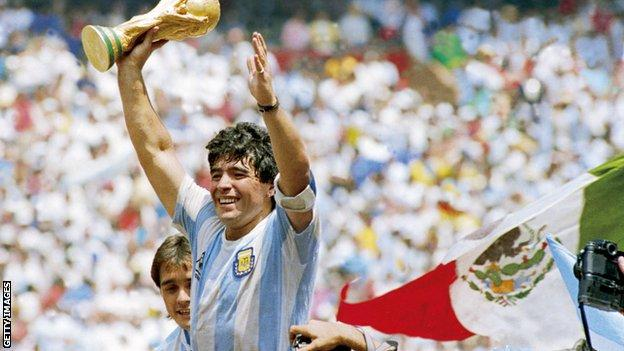

Gabriel Jesus needs extra finish to shine up front for Manchester City
Jesus, superb at harrying, can further press his senior striker claims against Lyon in the Champions League quarter-final
There was a moment a couple of minutes after Manchester City had taken the lead against Real Madrid last Friday when the ball was played to Dani Carvajal, deep in the right-back position. He half-paused, almost visibly relieved at the time he imagined he would have on the ball, a second or two to gather his thoughts and consider his options. Except there was no time because there, scampering towards him, a remorseless bailiff intent only on repossession, was Gabriel Jesus. Carvajal’s pass was hurried and City soon regained the ball. It is easy to see why Jesus is considered a Pep Guardiola-type of forward. He scored 14 league goals in 2019-20 but otherwise his stats are essentially those of a midfielder. He is skilful and diligent. He has an instinctive understanding of when and where to press, how to block off the passing lanes. Sergio Agüero, whether through something innate or because he was introduced to pressing later in his career, is not quite so effective – although there is no doubt he has improved under Guardiola. “Gabriel is the best striker at making the high intensity pressing in the world,” Guardiola said last October.
Champions League: Real Madrid push Inter towards exit after Vidal sees red
Real Madrid claimed their first-ever win at San Siro on Wednesday, beating Internazionale 2-0 in the Champions League after the hosts’ Arturo Vidal was sent off for dissent in the first half. Eden Hazard converted an early penalty and Achraf Hakimi deflected Rodrygo’s shot into his own goal to seal an authoritative victory for Real Madrid that leaves them on course to qualify for the last 16, and Inter facing a second successive group-stage exit. “Win, lose or draw, the important thing is to play well. Today we deserved to win and we had the match under control until the end,” said the Real Madrid head coach, Zinedine Zidane. “It doesn’t change anything. We also played well the other day [in the 1-1 draw with Villarreal] and deserved three points.”
Diego Maradona: Argentina legend dies aged 60
The former Argentina attacking midfielder and manager suffered a heart attack at his Buenos Aires home. He had successful surgery on a brain blood clot earlier in November and was to be treated for alcohol dependency. Maradona was captain when Argentina won the 1986 World Cup, scoring the famous 'Hand of God' goal against England in the quarter-finals.